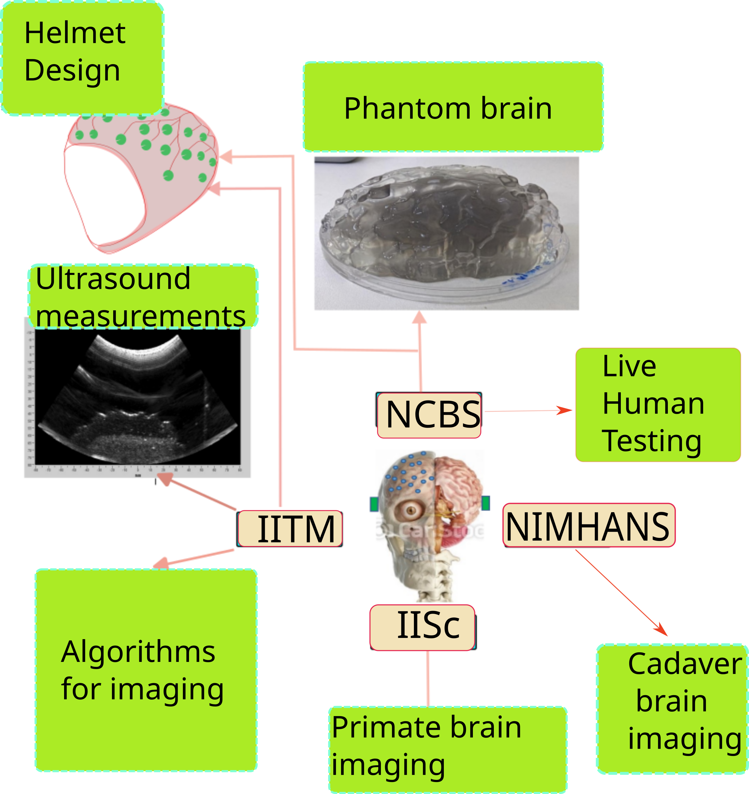

Advancing neuroscience through high-resolution acoustic insights.
The HIBITSU (High-resolution Brain Imaging Through Skull using Ultrasound) project is a multi-institutional initiative. We focus on utilising ultrasound for non-invasive, high-resolution mapping of brain regions, bridging the gap between computational models and physiological imaging to better understand the brain in healthy and disease conditions. Our initiative aims at reducing the diagnostic cost of by making scanning easy and accessible to everyone.
